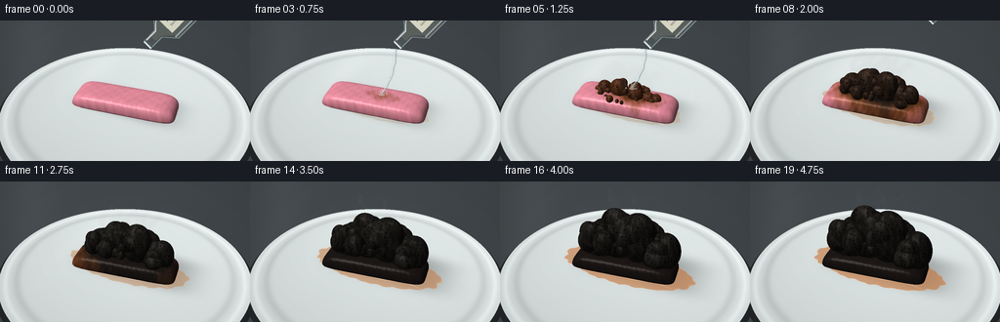
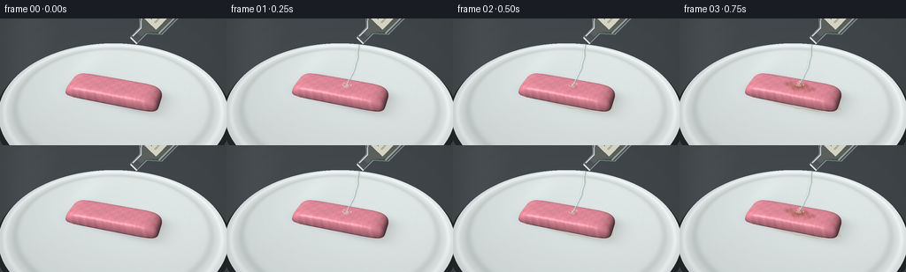
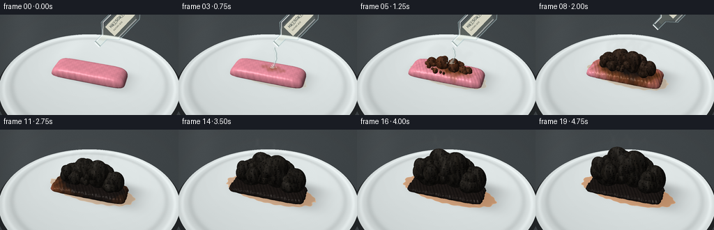
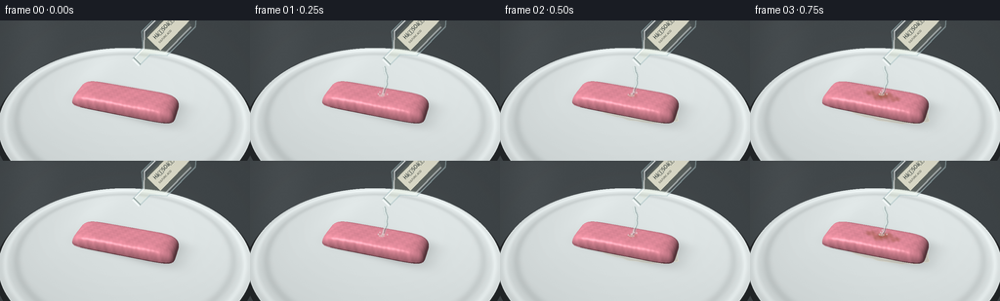

CODING AGENTS AS PIXEL WORLD MODELS
traex/GPT-6.1-Sol · material_0043
点击播放 · 原生 RGB 像素
逐轮保存的候选
回放视频、检查图与代码变化。
每份候选均可单独播放。实际图片检查记录在下方工具轨迹中。
候选 01播放与检查图
点击播放 · 原生 RGB 像素


展开代码变化
--- 上一保存版本
+++ 本次保存版本
@@ -0,0 +1,284 @@
+from pathlib import Path
+import numpy as np
+from PIL import Image, ImageDraw, ImageFilter, ImageFont
+from scipy.ndimage import gaussian_filter
+import artifact_io
+
+ROOT=Path(__file__).resolve().parent
+S=3
+W,H=256*S,144*S
+rng=np.random.default_rng(43)
+# A small, self-contained, analytic ray renderer; no assets or models.
+cam=np.array([3.6,-8.4,6.9])
+target=np.array([0.,0.,.65])
+forward=target-cam; forward/=np.linalg.norm(forward)
+right=np.cross(forward,[0,0,1]); right/=np.linalg.norm(right)
+up=np.cross(right,forward)
+yy,xx=np.mgrid[:H,:W]
+focal=W/(2*np.tan(np.deg2rad(39)/2))
+dirs=forward+((xx-W/2)/focal)[...,None]*right-((yy-H/2)/focal)[...,None]*up
+dirs/=np.linalg.norm(dirs,axis=-1)[...,None]
+light=np.array([-3,-4,8.]); light/=np.linalg.norm(light)
+
+def project(v):
+ v=np.asarray(v)-cam
+ return np.array([W/2+focal*np.dot(v,right)/np.dot(v,forward),H/2-focal*np.dot(v,up)/np.dot(v,forward)])/S
+
+def noise(p,f=1.):
+ x,y,z=np.moveaxis(p,-1,0)*f
+ return (.46*np.sin(x*3.17+y*2.4+z*.9)*np.sin(y*4.3-z*2.7+x*.6)+.28*np.sin(x*8.13-y*4.7+z*5.2)+.16*np.sin(x*19.2+y*13.4-z*11.6)+.10*np.sin(x*42.2-y*31.8+z*28.7))
+
+def shade(p,n,col,rough=.65,char=False):
+ detail=noise(p,2.8)
+ bump=np.stack([np.sin(p[...,0]*43+p[...,2]*19),np.sin(p[...,1]*49-p[...,2]*27),np.sin(p[...,0]*21+p[...,1]*29)],-1)
+ strength=.13 if char else .033
+ n=n+bump*strength
+ n/=np.maximum(np.linalg.norm(n,axis=-1)[...,None],1e-8)
+ diffuse=np.maximum(0,n@light)
+ view=cam-p; view/=np.maximum(np.linalg.norm(view,axis=-1)[...,None],1e-8)
+ half=view+light; half/=np.maximum(np.linalg.norm(half,axis=-1)[...,None],1e-8)
+ spec=np.maximum(0,np.sum(n*half,-1))**(28 if char else 70)
+ illum=.36+.68*diffuse
+ out=col*illum[...,None]*(1+detail[...,None]*(.32 if char else .05))
+ if char:
+ # fine cellular pitting, with pale jagged margins and black pore interiors
+ pore=(np.sin(p[...,0]*27+np.sin(p[...,2]*9))*np.sin(p[...,1]*31+np.cos(p[...,0]*8))*np.sin(p[...,2]*33+np.sin(p[...,1]*11)))
+ cavity=np.clip((np.abs(pore)-.57)*3.2,0,1)
+ out*=1-.68*cavity[...,None]
+ out+=spec[...,None]*19
+ else:
+ out+=spec[...,None]*47
+ return out
+
+# Static lab bench and shallow glazed ceramic dish.
+tfloor=(.0-cam[2])/dirs[...,2]
+ground=cam+tfloor[...,None]*dirs
+rad=np.linalg.norm(ground[...,:2],axis=-1)
+grain=rng.normal(0,.8,(H,W))
+base=np.empty((H,W,3),float)
+fall=7*np.exp(-((xx-W*.35)**2/(W*.65)**2+(yy-H*.1)**2/(H*.8)**2))
+for k,c in enumerate([60,66,69]): base[...,k]=c+fall+grain
+# Defocused light strips and a clean laboratory background.
+base+= (6*np.exp(-((xx-W*.13)/(W*.1))**2))[...,None]
+# Plate top, gently elevated, with a thick elliptical rim and soft reflections.
+tplate=(.12-cam[2])/dirs[...,2]
+platep=cam+tplate[...,None]*dirs
+r=np.linalg.norm(platep[...,:2],axis=-1)
+plate=r<3.92
+platecol=np.zeros_like(base)
+plate_light=(8*platep[...,1]/4+4*platep[...,0]/4)
+for k,c in enumerate([219,226,226]): platecol[...,k]=c+plate_light+grain*.35
+rim=np.exp(-((r-3.72)/.08)**2)
+inner=np.exp(-((r-3.39)/.12)**2)
+platecol+=rim[...,None]*16-inner[...,None]*17
+# The glaze has a broad rectangular reflection from an overhead softbox.
+ref=6*np.exp(-((platep[...,0]+1.9)/.6)**2-((platep[...,1]-1.6)/2.2)**2)
+platecol+=ref[...,None]
+base[plate]=platecol[plate]
+# plate cast shadow and ceramic edge thickness
+border=(rad<4.05)&(~plate)
+base[border]*=.56
+
+# Stable, irregular foam/char structure.
+blobs=[]
+for i in range(52):
+ a=rng.uniform(0,2*np.pi); rr=np.sqrt(rng.uniform())
+ x=rr*1.35*np.cos(a); y=rr*.61*np.sin(a)
+ dome=max(0,1-(x/1.65)**2-(y/.95)**2)
+ size=rng.uniform(.21,.44) if i<35 else rng.uniform(.11,.20)
+ blobs.append((x,y,.52+1.15*dome+rng.uniform(-.16,.16),size*rng.uniform(.8,1.3),size*rng.uniform(.75,1.15),size*rng.uniform(.85,1.6),rng.uniform(.04,.26)))
+# A few larger crumpled lobes hold the connected mound together.
+blobs[:0]=[(-.9,.06,.8,.61,.5,.73,.03),(-.28,.05,1.2,.7,.53,.81,.03),(.42,.02,1.28,.63,.54,.85,.05),(.97,.1,.85,.51,.47,.64,.09)]
+
+def gum_height(x,y):
+ # Rounded, almost rectangular piece of pink chewing gum.
+ # slight diagonal placement on the dish.
+ a=.10; X=x*np.cos(a)+y*np.sin(a); Y=-x*np.sin(a)+y*np.cos(a)
+ q=(np.abs(X)/1.68)**8+(np.abs(Y)/.62)**6
+ top=.15+.38*np.sqrt(np.maximum(0,1-q))
+ return np.where(q<1,top,-10.)
+
+def make_frame(i):
+ t=i/19
+ prog=np.clip((t-.055)/.8,0,1)
+ expansion=np.clip((t-.15)/.75,0,1)**.8
+ image=base.copy()
+ # Diffuse, physically oriented contact shadows on the dish.
+ x=platep[...,0]; y=platep[...,1]
+ sh=np.exp(-((x-.20-.33*expansion)/(1.55+.38*expansion))**4-((y-.12-.15*expansion)/(.7+.23*expansion))**4)
+ image[plate]*=(1-.28*sh[plate,None])
+ # Amber-tinted acid/syrup puddle, shallow and wet around the foot of the gum.
+ poolshape=((x-.05)/(1.7+.5*prog))**2+((y+.025)/(.67+.23*prog))**2
+ wav=.045*np.sin(x*9+y*13)+.03*np.sin(x*17-y*11)
+ pool=(poolshape<1+wav)&plate&(prog>.025)
+ poolrgb=np.stack([180+20*prog+0*x,168-48*prog+0*x,135-73*prog+0*x],-1)
+ al=.22+.4*prog
+ image[pool]=image[pool]*(1-al)+poolrgb[pool]*al
+ edge=np.exp(-((poolshape-1-wav)/.026)**2)*pool
+ image+=edge[...,None]*np.array([24,24,18])
+ reflect=np.exp(-((y+.51+.06*np.sin(4*x))/.024)**2)*np.clip(1-(x/1.8)**8,0,1)*pool
+ image+=reflect[...,None]*25
+ depth=np.full((H,W),1e6,float)
+ # Base gum: intersect a mathematically defined rounded heightfield.
+ # Only ray-march a tight image-space region around the subject.
+ y0,y1=int(H*.32),int(H*.82); x0,x1=int(W*.22),int(W*.79)
+ d=dirs[y0:y1,x0:x1]
+ previous=(.8-cam[2])/d[...,2]
+ hit=np.zeros(d.shape[:2],bool)
+ lo=previous.copy(); hi=previous.copy()
+ for z in np.linspace(.76,.145,37):
+ tt=(z-cam[2])/d[...,2]
+ pp=cam+tt[...,None]*d
+ under=z<gum_height(pp[...,0],pp[...,1])
+ fresh=under&(~hit)
+ lo[fresh]=previous[fresh]; hi[fresh]=tt[fresh]; hit|=fresh
+ previous=tt
+ for _ in range(7):
+ mid=(lo+hi)/2; pp=cam+mid[...,None]*d
+ inside=pp[...,2]<gum_height(pp[...,0],pp[...,1])
+ hi=np.where(inside,mid,hi); lo=np.where(inside,lo,mid)
+ tt=(lo+hi)/2; pp=cam+tt[...,None]*d
+ eps=.004
+ dhx=(gum_height(pp[...,0]+eps,pp[...,1])-gum_height(pp[...,0]-eps,pp[...,1]))/(2*eps)
+ dhy=(gum_height(pp[...,0],pp[...,1]+eps)-gum_height(pp[...,0],pp[...,1]-eps))/(2*eps)
+ normal=np.stack([-dhx,-dhy,np.ones_like(dhx)],-1)
+ normal/=np.maximum(np.linalg.norm(normal,axis=-1)[...,None],1e-8)
+ spread=np.sqrt(((pp[...,0]-.20)/1.7)**2+((pp[...,1])/.85)**2)
+ chem=np.clip((prog*1.85-spread*.7+noise(pp,1.6)*.11)*1.5,0,1)
+ # pink -> scorched caramel brown -> dark charcoal, no spurious glow.
+ pink=np.array([237,146,163]); tan=np.array([137,74,39]); black=np.array([30,25,23])
+ a=np.clip(chem*2,0,1)[...,None]; b=np.clip((chem-.35)/.65,0,1)[...,None]
+ col=(pink*(1-a)+tan*a)*(1-b)+black*b
+ col+=(noise(pp,7)*2)[...,None]
+ shaded=shade(pp,normal,col)
+ sub=image[y0:y1,x0:x1]; sub[hit]=shaded[hit]
+ dep=depth[y0:y1,x0:x1]; dep[hit]=tt[hit]
+ # Ellipsoidal lobes intersected analytically. Local bounding rectangles avoid
+ # expensive all-frame tests, and stable seeds preserve temporal coherence.
+ for bx,by,bz,rx,ry,rz,delay in blobs:
+ e=np.clip((expansion-delay)/(1-delay),0,1)
+ if e<=.004: continue
+ g=e**.65
+ center=np.array([bx*(.70+.3*g),by*(.75+.25*g),.35+(bz-.35)*g])
+ radii=np.array([rx,ry,rz])*(.13+.87*g)
+ # Project the ellipsoid's enclosing sphere to an image-space tile.
+ pc=project(center)*S; rr=max(radii)*focal/np.linalg.norm(center-cam)*1.35
+ xa=max(0,int(pc[0]-rr)); xb=min(W,int(pc[0]+rr+1))
+ ya=max(0,int(pc[1]-rr)); yb=min(H,int(pc[1]+rr+1))
+ if xb<=xa or yb<=ya: continue
+ ds=dirs[ya:yb,xa:xb]; oc=(cam-center)/radii
+ dr=ds/radii
+ aa=np.sum(dr*dr,-1); bb=2*np.sum(dr*oc,-1); cc=np.sum(oc*oc)-1
+ disc=bb*bb-4*aa*cc
+ dist=(-bb-np.sqrt(np.maximum(0,disc)))/(2*aa)
+ sel=(disc>0)&(dist>0)&(dist<depth[ya:yb,xa:xb])
+ if not np.any(sel): continue
+ points=cam+dist[sel,None]*ds[sel]
+ normals=(points-center)/radii**2
+ normals/=np.linalg.norm(normals,axis=-1)[...,None]
+ carbon=np.clip((prog-.16)*2.5,0,1)
+ color=np.array([102,55,32])*(1-carbon)+np.array([31,29,26])*carbon
+ col=np.broadcast_to(color,points.shape).copy()
+ # ridge coloring, wet brown at the base and charcoal grey in the lifted foam
+ col+=(noise(points,1.8)*9)[...,None]
+ lit=shade(points,normals,col,char=True)
+ dep=depth[ya:yb,xa:xb]; dep[sel]=dist[sel]
+ part=image[ya:yb,xa:xb]; part[sel]=lit
+ image=np.clip(image,0,255).astype(np.uint8)
+ im=Image.fromarray(image)
+ # Wisps of vapor, rather than an opaque smoke cloud: fixed sources on gum,
+ # advected upwards and gently displaced in the accelerated sequence.
+ if prog>.09:
+ steam=Image.new('RGBA',(W,H),(0,0,0,0)); sd=ImageDraw.Draw(steam)
+ for k in range(7):
+ source=project([-.8+k*.26,.11,.5+expansion*1.1])*S
+ points=[]
+ for j in range(28):
+ q=j/27
+ sx=source[0]+S*(np.sin(q*7+k*2+t*4)*q*5+q*q*7)
+ sy=source[1]-S*(12+25*prog)*q
+ points.append((sx,sy))
+ alpha=int((10+12*np.sin(np.pi*prog))*min(1,prog*3))
+ sd.line(points,fill=(220,224,219,alpha),width=3*S)
+ steam=steam.filter(ImageFilter.GaussianBlur(2.1*S))
+ im=Image.alpha_composite(im.convert('RGBA'),steam).convert('RGB')
+ # Reagent bottle, tilted down to the specimen. Its transparent glass is
+ # composited with refraction and thin highlights rather than solid polygons.
+ if i<10:
+ withdrawal=max(0,(i-7)/2)
+ ox=withdrawal*66; oy=-withdrawal*50
+ neck=np.array([151.+ox,25.+oy])
+ axis=np.array([.70,-.714]); perp=np.array([.714,.70])
+ def coords(a,b): return tuple((neck+axis*a+perp*b)*S)
+ # Contoured transparent bottle, with a short narrow neck and broad shoulder.
+ shape=[coords(0,-5),coords(16,-5),coords(27,-18),coords(69,-18),coords(75,-13),coords(75,13),coords(69,18),coords(27,18),coords(16,5),coords(0,5)]
+ mask=Image.new('L',(W,H)); md=ImageDraw.Draw(mask); md.polygon(shape,fill=255)
+ arr=np.array(im).astype(float); m=np.array(mask)/255
+ # Glass transmits a displaced, mildly yellowed background.
+ refr=np.roll(arr,5*S,axis=1)*np.array([.96,.97,.94])+np.array([16,18,17])
+ arr=arr*(1-m[...,None]*.40)+refr*m[...,None]*.40
+ im=Image.fromarray(np.uint8(np.clip(arr,0,255)))
+ layer=Image.new('RGBA',(W,H),(0,0,0,0)); bd=ImageDraw.Draw(layer)
+ bd.polygon(shape,fill=(189,204,201,12))
+ # Dense clear liquid visible inside the lower side of the tilted bottle.
+ liquid=[coords(9,-3),coords(24,-11),coords(66,-12),coords(69,-8),coords(67,14),coords(28,14),coords(16,3),coords(9,3)]
+ bd.polygon(liquid,fill=(213,216,183,38))
+ bd.line(shape+[shape[0]],fill=(170,195,198,145),width=S)
+ bd.line([coords(3,-4),coords(16,-4),coords(29,-16),coords(66,-16)],fill=(248,252,251,210),width=S)
+ bd.line([coords(26,15),coords(66,15)],fill=(245,250,246,130),width=2*S)
+ bd.line([coords(0,-5),coords(0,5)],fill=(245,250,250,230),width=2*S)
+ bd.line([coords(2,-5),coords(2,5)],fill=(91,112,111,140),width=S)
+ # A modest chemical label on the portion of the bottle remaining in shot.
+ label=Image.new('RGBA',(74*S,27*S),(233,232,212,230))
+ ld=ImageDraw.Draw(label)
+ try:
+ font=ImageFont.truetype('/usr/share/fonts/truetype/dejavu/DejaVuSans.ttf',8*S)
+ small=ImageFont.truetype('/usr/share/fonts/truetype/dejavu/DejaVuSans.ttf',4*S)
+ except OSError:
+ font=small=ImageFont.load_default()
+ ld.text((8*S,3*S),'HâSOâ',font=font,fill=(34,45,44,255))
+ ld.text((8*S,15*S),'SULFURIC ACID',font=small,fill=(60,64,55,255))
+ label=label.resize((43*S,19*S),Image.Resampling.LANCZOS).rotate(46,expand=True,resample=Image.Resampling.BICUBIC)
+ center=neck+axis*48
+ layer.alpha_composite(label,(int(center[0]*S-label.width/2),int(center[1]*S-label.height/2)))
+ # Narrow transparent pour, curved by gravity and ending at the gum surface.
+ if 1<=i<=7:
+ hit=project([.22,.03,.5+expansion*1.2])
+ start=neck+np.array([-2,4])
+ pts=[]
+ for j in range(36):
+ q=j/35
+ pos=start*(1-q)+hit*q
+ pos[0]+=4*np.sin(np.pi*q)
+ pos[0]+=.35*np.sin(q*21+i*.7)
+ pts.append(tuple(pos*S))
+ bd.line(pts,fill=(173,193,188,70),width=4*S)
+ bd.line([(x-S*.55,y) for x,y in pts],fill=(236,247,244,150),width=S)
+ bd.line([(x+S*.6,y) for x,y in pts],fill=(116,141,140,130),width=S)
+ px,py=hit*S
+ bd.ellipse((px-3*S,py-S,px+3*S,py+S),outline=(223,232,218,120),width=S)
+ # Tiny beads at the point of impact.
+ for k in range(4):
+ ang=k*1.7+i*.9
+ qx=px+S*(3+k)*np.cos(ang); qy=py-S*(2+k)*abs(np.sin(ang))
+ bd.ellipse((qx-.55*S,qy-.65*S,qx+.55*S,qy+.65*S),fill=(223,236,226,145))
+ im=Image.alpha_composite(im.convert('RGBA'),layer).convert('RGB')
+ # Filmic highlight roll-off and a very subtle lens vignette.
+ arr=np.asarray(im).astype(float)
+ vig=1-.055*(((xx-W/2)/(W*.7))**2+((yy-H/2)/(H*.8))**2)
+ arr*=vig[...,None]
+ im=Image.fromarray(np.uint8(np.clip(arr,0,255))).resize((256,144),Image.Resampling.LANCZOS)
+ return np.array(im)
+
+frames=[]
+for i in range(20):
+ frames.append(make_frame(i))
+ print(f'frame {i+1}/20',flush=True)
+frames=np.stack(frames)
+artifact_io.save(frames,ROOT)
+# A standard RGB video is provided alongside the lossless required artifacts.
+try:
+ import imageio.v2 as imageio
+ imageio.mimsave(ROOT/'video.mp4',frames,fps=4,codec='libx264',quality=9,macro_block_size=1)
+except ImportError:
+ pass
候选 02播放与检查图
点击播放 · 原生 RGB 像素


展开代码变化
--- 上一保存版本
+++ 本次保存版本
@@ -31,7 +31,7 @@
def shade(p,n,col,rough=.65,char=False):
detail=noise(p,2.8)
bump=np.stack([np.sin(p[...,0]*43+p[...,2]*19),np.sin(p[...,1]*49-p[...,2]*27),np.sin(p[...,0]*21+p[...,1]*29)],-1)
- strength=.13 if char else .033
+ strength=.22 if char else .033
n=n+bump*strength
n/=np.maximum(np.linalg.norm(n,axis=-1)[...,None],1e-8)
diffuse=np.maximum(0,n@light)
@@ -45,7 +45,7 @@
pore=(np.sin(p[...,0]*27+np.sin(p[...,2]*9))*np.sin(p[...,1]*31+np.cos(p[...,0]*8))*np.sin(p[...,2]*33+np.sin(p[...,1]*11)))
cavity=np.clip((np.abs(pore)-.57)*3.2,0,1)
out*=1-.68*cavity[...,None]
- out+=spec[...,None]*19
+ out+=spec[...,None]*10
else:
out+=spec[...,None]*47
return out
@@ -90,12 +90,14 @@
# A few larger crumpled lobes hold the connected mound together.
blobs[:0]=[(-.9,.06,.8,.61,.5,.73,.03),(-.28,.05,1.2,.7,.53,.81,.03),(.42,.02,1.28,.63,.54,.85,.05),(.97,.1,.85,.51,.47,.64,.09)]
-def gum_height(x,y):
+def gum_height(x,y,collapse=0.):
# Rounded, almost rectangular piece of pink chewing gum.
# slight diagonal placement on the dish.
a=.10; X=x*np.cos(a)+y*np.sin(a); Y=-x*np.sin(a)+y*np.cos(a)
- q=(np.abs(X)/1.68)**8+(np.abs(Y)/.62)**6
- top=.15+.38*np.sqrt(np.maximum(0,1-q))
+ q=(np.abs(X)/(1.68+.05*collapse))**8+(np.abs(Y)/(.62+.07*collapse))**6
+ q+=collapse*(.06*np.sin(X*18+Y*11)+.045*np.sin(Y*31-X*12))
+ top=.15+(.38-.23*collapse)*np.sqrt(np.maximum(0,1-q))
+ top+=collapse*.012*np.sin(X*41+Y*23)
return np.where(q<1,top,-10.)
def make_frame(i):
@@ -129,18 +131,18 @@
for z in np.linspace(.76,.145,37):
tt=(z-cam[2])/d[...,2]
pp=cam+tt[...,None]*d
- under=z<gum_height(pp[...,0],pp[...,1])
+ under=z<gum_height(pp[...,0],pp[...,1],expansion)
fresh=under&(~hit)
lo[fresh]=previous[fresh]; hi[fresh]=tt[fresh]; hit|=fresh
previous=tt
for _ in range(7):
mid=(lo+hi)/2; pp=cam+mid[...,None]*d
- inside=pp[...,2]<gum_height(pp[...,0],pp[...,1])
+ inside=pp[...,2]<gum_height(pp[...,0],pp[...,1],expansion)
hi=np.where(inside,mid,hi); lo=np.where(inside,lo,mid)
tt=(lo+hi)/2; pp=cam+tt[...,None]*d
eps=.004
- dhx=(gum_height(pp[...,0]+eps,pp[...,1])-gum_height(pp[...,0]-eps,pp[...,1]))/(2*eps)
- dhy=(gum_height(pp[...,0],pp[...,1]+eps)-gum_height(pp[...,0],pp[...,1]-eps))/(2*eps)
+ dhx=(gum_height(pp[...,0]+eps,pp[...,1],expansion)-gum_height(pp[...,0]-eps,pp[...,1],expansion))/(2*eps)
+ dhy=(gum_height(pp[...,0],pp[...,1]+eps,expansion)-gum_height(pp[...,0],pp[...,1]-eps,expansion))/(2*eps)
normal=np.stack([-dhx,-dhy,np.ones_like(dhx)],-1)
normal/=np.maximum(np.linalg.norm(normal,axis=-1)[...,None],1e-8)
spread=np.sqrt(((pp[...,0]-.20)/1.7)**2+((pp[...,1])/.85)**2)
@@ -177,7 +179,7 @@
normals=(points-center)/radii**2
normals/=np.linalg.norm(normals,axis=-1)[...,None]
carbon=np.clip((prog-.16)*2.5,0,1)
- color=np.array([102,55,32])*(1-carbon)+np.array([31,29,26])*carbon
+ color=np.array([102,55,32])*(1-carbon)+np.array([36,33,29])*carbon
col=np.broadcast_to(color,points.shape).copy()
# ridge coloring, wet brown at the base and charcoal grey in the lifted foam
col+=(noise(points,1.8)*9)[...,None]
@@ -207,7 +209,7 @@
if i<10:
withdrawal=max(0,(i-7)/2)
ox=withdrawal*66; oy=-withdrawal*50
- neck=np.array([151.+ox,25.+oy])
+ neck=np.array([139.+ox,43.+oy])
axis=np.array([.70,-.714]); perp=np.array([.714,.70])
def coords(a,b): return tuple((neck+axis*a+perp*b)*S)
# Contoured transparent bottle, with a short narrow neck and broad shoulder.
可观测工具轨迹
实际执行的命令与返回图片。
命令 1exit 0
/bin/bash -lc 'ls -la; cat prompt.txt; cat GENERATION_RULES.md; cat task_spec.json'
命令 2exit 0
/bin/bash -lc 'cat artifact_io.py'
命令 3exit 0
/bin/bash -lc "python - <<'PY' import importlib.util for m in ['numpy','PIL','scipy','imageio','imageio_ffmpeg']: print(m, bool(importlib.util.find_spec(m))) PY"
命令 4exit 0
/bin/bash -lc "cat > generate.py <<'PY'
from pathlib import Path
import numpy as np
from PIL import Image, ImageDraw, ImageFilter, ImageFont
from scipy.ndimage import gaussian_filter
import artifact_io
ROOT=Path(__file__).resolve().parent
S=3
W,H=256*S,144*S
rng=np.random.default_rng(43)
# A small, self-contained, analytic ray renderer; no assets or models.
cam=np.array([3.6,-8.4,6.9])
target=np.array([0.,0.,.65])
forward=target-cam; forward/=np.linalg.norm(forward)
right=np.cross(forward,[0,0,1]); right/=np.linalg.norm(right)
up=np.cross(right,forward)
yy,xx=np.mgrid[:H,:W]
focal=W/(2*np.tan(np.deg2rad(39)/2))
dirs=forward+((xx-W/2)/focal)[...,None]*right-((yy-H/2)/focal)[...,None]*up
dirs/=np.linalg.norm(dirs,axis=-1)[...,None]
light=np.array([-3,-4,8.]); light/=np.linalg.norm(light)
def project(v):
v=np.asarray(v)-cam
return np.array([W/2+focal*np.dot(v,right)/np.dot(v,forward),H/2-focal*np.dot(v,up)/np.dot(v,forward)])/S
def noise(p,f=1.):
x,y,z=np.moveaxis(p,-1,0)*f
return (.46*np.sin(x*3.17+y*2.4+z*.9)*np.sin(y*4.3-z*2.7+x*.6)+.28*np.sin(x*8.13-y*4.7+z*5.2)+.16*np.sin(x*19.2+y*13.4-z*11.6)+.10*np.sin(x*42.2-y*31.8+z*28.7))
def shade(p,n,col,rough=.65,char=False):
detail=noise(p,2.8)
bump=np.stack([np.sin(p[...,0]*43+p[...,2]*19),np.sin(p[...,1]*49-p[...,2]*27),np.sin(p[...,0]*21+p[...,1]*29)],-1)
strength=.13 if char else .033
n=n+bump*strength
n/=np.maximum(np.linalg.norm(n,axis=-1)[...,None],1e-8)
diffuse=np.maximum(0,n@light)
view=cam-p; view/=np.maximum(np.linalg.norm(view,axis=-1)[...,None],1e-8)
half=view+light; half/=np.maximum(np.linalg.norm(half,axis=-1)[...,None],1e-8)
spec=np.maximum(0,np.sum(n*half,-1))**(28 if char else 70)
illum=.36+.68*diffuse
out=col*illum[...,None]*(1+detail[...,None]*(.32 if char else .05))
if char:
# fine cellular pitting, with pale jagged margins and black pore interiors
pore=(np.sin(p[...,0]*27+np.sin(p[...,2]*9))*np.sin(p[...,1]*31+np.cos(p[...,0]*8))*np.sin(p[...,2]*33+np.sin(p[...,1]*11)))
cavity=np.clip((np.abs(pore)-.57)*3.2,0,1)
out*=1-.68*cavity[...,None]
out+=spec[...,None]*19
else:
out+=spec[...,None]*47
return out
# Static lab bench and shallow glazed ceramic dish.
tfloor=(.0-cam[2])/dirs[...,2]
ground=cam+tfloor[...,None]*dirs
rad=np.linalg.norm(ground[...,:2],axis=-1)
grain=rng.normal(0,.8,(H,W))
base=np.empty((H,W,3),float)
fall=7*np.exp(-((xx-W*.35)**2/(W*.65)**2+(yy-H*.1)**2/(H*.8)**2))
for k,c in enumerate([60,66,69]): base[...,k]=c+fall+grain
# Defocused light strips and a clean laboratory background.
base+= (6*np.exp(-((xx-W*.13)/(W*.1))**2))[...,None]
# Plate top, gently elevated, with a thick elliptical rim and soft reflections.
tplate=(.12-cam[2])/dirs[...,2]
platep=cam+tplate[...,None]*dirs
r=np.linalg.norm(platep[...,:2],axis=-1)
plate=r<3.92
platecol=np.zeros_like(base)
plate_light=(8*platep[...,1]/4+4*platep[...,0]/4)
for k,c in enumerate([219,226,226]): platecol[...,k]=c+plate_light+grain*.35
rim=np.exp(-((r-3.72)/.08)**2)
inner=np.exp(-((r-3.39)/.12)**2)
platecol+=rim[...,None]*16-inner[...,None]*17
# The glaze has a broad rectangular reflection from an overhead softbox.
ref=6*np.exp(-((platep[...,0]+1.9)/.6)**2-((platep[...,1]-1.6)/2.2)**2)
platecol+=ref[...,None]
base[plate]=platecol[plate]
# plate cast shadow and ceramic edge thickness
border=(rad<4.05)&(~plate)
base[border]*=.56
# Stable, irregular foam/char structure.
blobs=[]
for i in range(52):
a=rng.uniform(0,2*np.pi); rr=np.sqrt(rng.uniform())
x=rr*1.35*np.cos(a); y=rr*.61*np.sin(a)
dome=max(0,1-(x/1.65)**2-(y/.95)**2)
size=rng.uniform(.21,.44) if i<35 else rng.uniform(.11,.20)
blobs.append((x,y,.52+1.15*dome+rng.uniform(-.16,.16),size*rng.uniform(.8,1.3),size*rng.uniform(.75,1.15),size*rng.uniform(.85,1.6),rng.uniform(.04,.26)))
# A few larger crumpled lobes hold the connected mound together.
blobs[:0]=[(-.9,.06,.8,.61,.5,.73,.03),(-.28,.05,1.2,.7,.53,.81,.03),(.42,.02,1.28,.63,.54,.85,.05),(.97,.1,.85,.51,.47,.64,.09)]
def gum_height(x,y):
# Rounded, almost rectangular piece of pink chewing gum.
# slight diagonal placement on the dish.
a=.10; X=x*np.cos(a)+y*np.sin(a); Y=-x*np.sin(a)+y*np.cos(a)
q=(np.abs(X)/1.68)**8+(np.abs(Y)/.62)**6
top=.15+.38*np.sqrt(np.maximum(0,1-q))
return np.where(q<1,top,-10.)
def make_frame(i):
t=i/19
prog=np.clip((t-.055)/.8,0,1)
expansion=np.clip((t-.15)/.75,0,1)**.8
image=base.copy()
# Diffuse, physically oriented contact shadows on the dish.
x=platep[...,0]; y=platep[...,1]
sh=np.exp(-((x-.20-.33*expansion)/(1.55+.38*expansion))**4-((y-.12-.15*expansion)/(.7+.23*expansion))**4)
image[plate]*=(1-.28*sh[plate,None])
# Amber-tinted acid/syrup puddle, shallow and wet around the foot of the gum.
poolshape=((x-.05)/(1.7+.5*prog))**2+((y+.025)/(.67+.23*prog))**2
wav=.045*np.sin(x*9+y*13)+.03*np.sin(x*17-y*11)
pool=(poolshape<1+wav)&plate&(prog>.025)
poolrgb=np.stack([180+20*prog+0*x,168-48*prog+0*x,135-73*prog+0*x],-1)
al=.22+.4*prog
image[pool]=image[pool]*(1-al)+poolrgb[pool]*al
edge=np.exp(-((poolshape-1-wav)/.026)**2)*pool
image+=edge[...,None]*np.array([24,24,18])
reflect=np.exp(-((y+.51+.06*np.sin(4*x))/.024)**2)*np.clip(1-(x/1.8)**8,0,1)*pool
image+=reflect[...,None]*25
depth=np.full((H,W),1e6,float)
# Base gum: intersect a mathematically defined rounded heightfield.
# Only ray-march a tight image-space region around the subject.
y0,y1=int(H*.32),int(H*.82); x0,x1=int(W*.22),int(W*.79)
d=dirs[y0:y1,x0:x1]
previous=(.8-cam[2])/d[...,2]
hit=np.zeros(d.shape[:2],bool)
lo=previous.copy(); hi=previous.copy()
for z in np.linspace(.76,.145,37):
tt=(z-cam[2])/d[...,2]
pp=cam+tt[...,None]*d
under=z<gum_height(pp[...,0],pp[...,1])
fresh=under&(~hit)
lo[fresh]=previous[fresh]; hi[fresh]=tt[fresh]; hit|=fresh
previous=tt
for _ in range(7):
mid=(lo+hi)/2; pp=cam+mid[...,None]*d
inside=pp[...,2]<gum_height(pp[...,0],pp[...,1])
hi=np.where(inside,mid,hi); lo=np.where(inside,lo,mid)
tt=(lo+hi)/2; pp=cam+tt[...,None]*d
eps=.004
dhx=(gum_height(pp[...,0]+eps,pp[...,1])-gum_height(pp[...,0]-eps,pp[...,1]))/(2*eps)
dhy=(gum_height(pp[...,0],pp[...,1]+eps)-gum_height(pp[...,0],pp[...,1]-eps))/(2*eps)
normal=np.stack([-dhx,-dhy,np.ones_like(dhx)],-1)
normal/=np.maximum(np.linalg.norm(normal,axis=-1)[...,None],1e-8)
spread=np.sqrt(((pp[...,0]-.20)/1.7)**2+((pp[...,1])/.85)**2)
chem=np.clip((prog*1.85-spread*.7+noise(pp,1.6)*.11)*1.5,0,1)
# pink -> scorched caramel brown -> dark charcoal, no spurious glow.
pink=np.array([237,146,163]); tan=np.array([137,74,39]); black=np.array([30,25,23])
a=np.clip(chem*2,0,1)[...,None]; b=np.clip((chem-.35)/.65,0,1)[...,None]
col=(pink*(1-a)+tan*a)*(1-b)+black*b
col+=(noise(pp,7)*2)[...,None]
shaded=shade(pp,normal,col)
sub=image[y0:y1,x0:x1]; sub[hit]=shaded[hit]
dep=depth[y0:y1,x0:x1]; dep[hit]=tt[hit]
# Ellipsoidal lobes intersected analytically. Local bounding rectangles avoid
# expensive all-frame tests, and stable seeds preserve temporal coherence.
for bx,by,bz,rx,ry,rz,delay in blobs:
e=np.clip((expansion-delay)/(1-delay),0,1)
if e<=.004: continue
g=e**.65
center=np.array([bx*(.70+.3*g),by*(.75+.25*g),.35+(bz-.35)*g])
radii=np.array([rx,ry,rz])*(.13+.87*g)
# Project the ellipsoid's enclosing sphere to an image-space tile.
pc=project(center)*S; rr=max(radii)*focal/np.linalg.norm(center-cam)*1.35
xa=max(0,int(pc[0]-rr)); xb=min(W,int(pc[0]+rr+1))
ya=max(0,int(pc[1]-rr)); yb=min(H,int(pc[1]+rr+1))
if xb<=xa or yb<=ya: continue
ds=dirs[ya:yb,xa:xb]; oc=(cam-center)/radii
dr=ds/radii
aa=np.sum(dr*dr,-1); bb=2*np.sum(dr*oc,-1); cc=np.sum(oc*oc)-1
disc=bb*bb-4*aa*cc
dist=(-bb-np.sqrt(np.maximum(0,disc)))/(2*aa)
sel=(disc>0)&(dist>0)&(dist<depth[ya:yb,xa:xb])
if not np.any(sel): continue
points=cam+dist[sel,None]*ds[sel]
normals=(points-center)/radii**2
normals/=np.linalg.norm(normals,axis=-1)[...,None]
carbon=np.clip((prog-.16)*2.5,0,1)
color=np.array([102,55,32])*(1-carbon)+np.array([31,29,26])*carbon
col=np.broadcast_to(color,points.shape).copy()
# ridge coloring, wet brown at the base and charcoal grey in the lifted foam
col+=(noise(points,1.8)*9)[...,None]
lit=shade(points,normals,col,char=True)
dep=depth[ya:yb,xa:xb]; dep[sel]=dist[sel]
part=image[ya:yb,xa:xb]; part[sel]=lit
image=np.clip(image,0,255).astype(np.uint8)
im=Image.fromarray(image)
# Wisps of vapor, rather than an opaque smoke cloud: fixed sources on gum,
# advected upwards and gently displaced in the accelerated sequence.
if prog>.09:
steam=Image.new('RGBA',(W,H),(0,0,0,0)); sd=ImageDraw.Draw(steam)
for k in range(7):
source=project([-.8+k*.26,.11,.5+expansion*1.1])*S
points=[]
for j in range(28):
q=j/27
sx=source[0]+S*(np.sin(q*7+k*2+t*4)*q*5+q*q*7)
sy=source[1]-S*(12+25*prog)*q
points.append((sx,sy))
alpha=int((10+12*np.sin(np.pi*prog))*min(1,prog*3))
sd.line(points,fill=(220,224,219,alpha),width=3*S)
steam=steam.filter(ImageFilter.GaussianBlur(2.1*S))
im=Image.alpha_composite(im.convert('RGBA'),steam).convert('RGB')
# Reagent bottle, tilted down to the specimen. Its transparent glass is
# composited with refraction and thin highlights rather than solid polygons.
if i<10:
withdrawal=max(0,(i-7)/2)
ox=withdrawal*66; oy=-withdrawal*50
neck=np.array([151.+ox,25.+oy])
axis=np.array([.70,-.714]); perp=np.array([.714,.70])
def coords(a,b): return tuple((neck+axis*a+perp*b)*S)
# Contoured transparent bottle, with a short narrow neck and broad shoulder.
shape=[coords(0,-5),coords(16,-5),coords(27,-18),coords(69,-18),coords(75,-13),coords(75,13),coords(69,18),coords(27,18),coords(16,5),coords(0,5)]
mask=Image.new('L',(W,H)); md=ImageDraw.Draw(mask); md.polygon(shape,fill=255)
arr=np.array(im).astype(float); m=np.array(mask)/255
# Glass transmits a displaced, mildly yellowed background.
refr=np.roll(arr,5*S,axis=1)*np.array([.96,.97,.94])+np.array([16,18,17])
arr=arr*(1-m[...,None]*.40)+refr*m[...,None]*.40
im=Image.fromarray(np.uint8(np.clip(arr,0,255)))
layer=Image.new('RGBA',(W,H),(0,0,0,0)); bd=ImageDraw.Draw(layer)
bd.polygon(shape,fill=(189,204,201,12))
# Dense clear liquid visible inside the lower side of the tilted bottle.
liquid=[coords(9,-3),coords(24,-11),coords(66,-12),coords(69,-8),coords(67,14),coords(28,14),coords(16,3),coords(9,3)]
bd.polygon(liquid,fill=(213,216,183,38))
bd.line(shape+[shape[0]],fill=(170,195,198,145),width=S)
bd.line([coords(3,-4),coords(16,-4),coords(29,-16),coords(66,-16)],fill=(248,252,251,210),width=S)
bd.line([coords(26,15),coords(66,15)],fill=(245,250,246,130),width=2*S)
bd.line([coords(0,-5),coords(0,5)],fill=(245,250,250,230),width=2*S)
bd.line([coords(2,-5),coords(2,5)],fill=(91,112,111,140),width=S)
# A modest chemical label on the portion of the bottle remaining in shot.
label=Image.new('RGBA',(74*S,27*S),(233,232,212,230))
ld=ImageDraw.Draw(label)
try:
font=ImageFont.truetype('/usr/share/fonts/truetype/dejavu/DejaVuSans.ttf',8*S)
small=ImageFont.truetype('/usr/share/fonts/truetype/dejavu/DejaVuSans.ttf',4*S)
except OSError:
font=small=ImageFont.load_default()
ld.text((8*S,3*S),'HâSOâ',font=font,fill=(34,45,44,255))
ld.text((8*S,15*S),'SULFURIC ACID',font=small,fill=(60,64,55,255))
label=label.resize((43*S,19*S),Image.Resampling.LANCZOS).rotate(46,expand=True,resample=Image.Resampling.BICUBIC)
center=neck+axis*48
layer.alpha_composite(label,(int(center[0]*S-label.width/2),int(center[1]*S-label.height/2)))
# Narrow transparent pour, curved by gravity and ending at the gum surface.
if 1<=i<=7:
hit=project([.22,.03,.5+expansion*1.2])
start=neck+np.array([-2,4])
pts=[]
for j in range(36):
q=j/35
pos=start*(1-q)+hit*q
pos[0]+=4*np.sin(np.pi*q)
pos[0]+=.35*np.sin(q*21+i*.7)
pts.append(tuple(pos*S))
bd.line(pts,fill=(173,193,188,70),width=4*S)
bd.line([(x-S*.55,y) for x,y in pts],fill=(236,247,244,150),width=S)
bd.line([(x+S*.6,y) for x,y in pts],fill=(116,141,140,130),width=S)
px,py=hit*S
bd.ellipse((px-3*S,py-S,px+3*S,py+S),outline=(223,232,218,120),width=S)
# Tiny beads at the point of impact.
for k in range(4):
ang=k*1.7+i*.9
qx=px+S*(3+k)*np.cos(ang); qy=py-S*(2+k)*abs(np.sin(ang))
bd.ellipse((qx-.55*S,qy-.65*S,qx+.55*S,qy+.65*S),fill=(223,236,226,145))
im=Image.alpha_composite(im.convert('RGBA'),layer).convert('RGB')
# Filmic highlight roll-off and a very subtle lens vignette.
arr=np.asarray(im).astype(float)
vig=1-.055*(((xx-W/2)/(W*.7))**2+((yy-H/2)/(H*.8))**2)
arr*=vig[...,None]
im=Image.fromarray(np.uint8(np.clip(arr,0,255))).resize((256,144),Image.Resampling.LANCZOS)
return np.array(im)
frames=[]
for i in range(20):
frames.append(make_frame(i))
print(f'frame {i+1}/20',flush=True)
frames=np.stack(frames)
artifact_io.save(frames,ROOT)
# A standard RGB video is provided alongside the lossless required artifacts.
try:
import imageio.v2 as imageio
imageio.mimsave(ROOT/'video.mp4',frames,fps=4,codec='libx264',quality=9,macro_block_size=1)
except ImportError:
pass
PY
python generate.py"命令 5exit 0
/bin/bash -lc "python - <<'PY'
p='generate.py'
s=open(p).read().replace('def gum_height(x,y):','def gum_height(x,y,collapse=0.):')
s=s.replace('q=(np.abs(X)/1.68)**8+(np.abs(Y)/.62)**6\\n top=.15+.38*np.sqrt(np.maximum(0,1-q))','q=(np.abs(X)/(1.68+.05*collapse))**8+(np.abs(Y)/(.62+.07*collapse))**6\\n q+=collapse*(.06*np.sin(X*18+Y*11)+.045*np.sin(Y*31-X*12))\\n top=.15+(.38-.23*collapse)*np.sqrt(np.maximum(0,1-q))\\n top+=collapse*.012*np.sin(X*41+Y*23)')
s=s.replace('gum_height(pp[...,0],pp[...,1])','gum_height(pp[...,0],pp[...,1],expansion)')
s=s.replace('gum_height(pp[...,0]+eps,pp[...,1])','gum_height(pp[...,0]+eps,pp[...,1],expansion)')
s=s.replace('gum_height(pp[...,0]-eps,pp[...,1])','gum_height(pp[...,0]-eps,pp[...,1],expansion)')
s=s.replace('gum_height(pp[...,0],pp[...,1]+eps)','gum_height(pp[...,0],pp[...,1]+eps,expansion)')
s=s.replace('gum_height(pp[...,0],pp[...,1]-eps)','gum_height(pp[...,0],pp[...,1]-eps,expansion)')
s=s.replace('neck=np.array([151.+ox,25.+oy])','neck=np.array([139.+ox,43.+oy])')
s=s.replace('strength=.13 if char else .033','strength=.22 if char else .033')
s=s.replace('out+=spec[...,None]*19','out+=spec[...,None]*10')
s=s.replace('np.array([31,29,26])*carbon','np.array([36,33,29])*carbon')
open(p,'w').write(s)
PY
python generate.py"命令 6exit 0
/bin/bash -lc "ls -lh video.mp4 pixels.npz index.html generate.py; python - <<'PY'
import numpy as np
from PIL import Image
p=np.load('pixels.npz')['pixels']
assert p.shape==(144,256,20)
assert len(list(__import__('pathlib').Path('frames').glob('*.png')))==20
assert Image.open('frames/19.png').mode=='RGB'
print('Verified: 20 RGB frames, 256 Ã 144, 4 fps.')
PY"视觉工具实际返回图片 1

视觉工具实际返回图片 2

保存候选 2 份；完成命令 6 次；可验证图片返回 2 张。原始 API 响应与完整日志保留在本地。